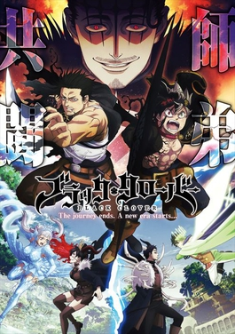

Attack On Titan
When man-eating Titans first appeared 100 years ago, humans found safety behind massive walls
that stopped the giants in their tracks. But the safety
they have had for so long is threatened when a colossal Titan smashes through the barriers,
causing a flood of the giants into what had been the human
Google Read
Audible
Water

Black Clover
Black Clover is a Japanese manga series written and illustrated by Yūki Tabata.
The story centers around Asta, a young boy seemingly born without any magic power,
something that is unknown in the world he lives in. With his fellow mages from the
Black Bulls, Asta plans to become the next Wizard King.
Google Read
Audible
Water
Death Note
Death Note is a Japanese manga series written by Tsugumi Ohba and
illustrated by Takeshi Obata. The story follows Light Yagami, a teen genius who discovers a
mysterious notebook: the "Death Note", which belonged to the Shinigami Ryuk, and grants the user the
supernatural ability to kill anyone whose name is written.
Google Read
Audible
Water
Great Pretender
Great Pretender is an original Japanese crime comedy anime television series produced by Wit Studio, directed
by Hiro Kaburagi and written by Ryōta Kosawa.Makoto
Edamura, supposedly Japan's greatest swindler, gets
more than he bargained for when he tries to con real
world-class crook Laurent Thierry.
Google Read
Audible
Water
Naruto Usumaki
Naruto is a Japanese manga series written and illustrated by Masashi Kishimoto.
It tells the story of Naruto Uzumaki, a young ninja who seeks recognition from his peers and dreams of
becoming the Hokage, the leader of his village. The story has two parts – the first set in Naruto's
pre-teen years, and the second in his teens.
Google Read
Audible
Water
Jujutsu Kaisen
Jujutsu Kaisen is a Japanese manga series written and illustrated by Gege Akutami, serialized in Shueisha's Weekly
Shōnen Jump since March 2018. The individual chapters of Jujutsu Kaisen are collected and published by Shueisha,
with fifteen tankōbon volumes released as of March 2021.
Google Read
Audible
Water